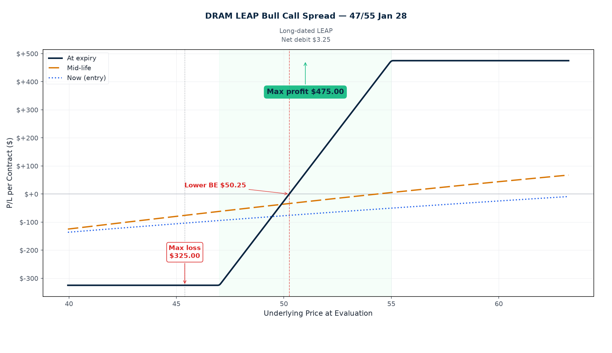

P/L Curve — Three Time Horizons

Max Profit
$807.50
above $70 at Jan 21 '28 expiry
Max Loss
$192.50
defined risk = net debit
Net Debit
$1.925
1 bull call spread · $192.50 total
Spot / IV
$45.39
DRAM @ entry · IV ~80% (TBD)
Why This Structure
The bull call spread expresses a defined-risk bullish view on DRAM with the same expiry (Jan 21 '28) but two different strikes. The long 60C captures the upside, the short 70C pays for most of the long leg, and the net debit defines the loss. This is the cleanest "buy DRAM higher over 18 months" structure — no naked calls, no calendar complexity, just a vertical spread on a long timeline.
Why a bull call spread over a naked long call? A naked long 60C Jan 21 '28 costs $15.425/share = $1,542.50/contract — 8× the debit of the spread. The naked call has unlimited upside but $1,542.50 of max loss. The spread caps the upside at $70 (vs unlimited on the naked) but defines the loss at $192.50. The trade-off: capped reward, smaller debit. For a recovery thesis that's "we need DRAM to be meaningfully higher, not a triple-bagger," the capped upside at $70 is irrelevant — DRAM hitting $80 or $100 isn't the thesis. The thesis is DRAM reclaims $60+ and ideally pushes through $70. The spread hits max profit at $70 and stops.
Why a bull call spread over a calendar? The DRAM position already has a calendar and a diagonal open. The calendar is the theta-harvest play (max profit $628 at $70 by Dec 18). The diagonal is the directional play with theta help (max profit $1,231 above $70 at Dec 18). The bull call spread is the directional play with defined risk and a longer timeline — it's the "what if this takes more than 6 months to play out" position. If DRAM is at $70 by Dec 18, the calendar wins and the diagonal wins and the spread is still paying (it pays at $70, not just above). If DRAM is at $70 by Jan 21 '28 but never gets there in 2026, the calendar expires in December (likely a partial win), the diagonal captures some of the move, and the spread is at max profit. The three positions are non-overlapping in payoff shape and timeline.
Why January 21 '28? DRAM is now -32% from its June peak ($80 → $45.39). The recovery thesis is real but the timeline is uncertain. The 541 DTE gives the position 18 months to resolve — long enough to absorb a messy 2H 2026 (potential earnings volatility, further memory pricing weakness) and still have a defined outcome before January 2028. The 6/12-month LEAPS calendar doesn't exist for DRAM (low OI on intermediate expiries), so the natural LEAPS slot is January 2028.
Why $60/$70 strikes? DRAM at $45.39 needs to rally ~32% to reach the long strike and ~54% to reach the short strike. That sounds like a lot, but DRAM has moved 30%+ in 6 months multiple times in the last 2 years (the December 2024 → June 2025 move was +80%; the March 2026 → June 2026 peak was +50%). The strike spread $60/$70 is wide enough to be cheap (debit $1.925 is small relative to intrinsic and time value) but tight enough that the breakeven ($61.93) is within the historical recovery range. The long 60C captures all the upside from $60 to $70; the short 70C sells the right tail that the thesis doesn't price.
Thesis
- Why DRAM, why now: DRAM has corrected -32% from its June peak ($80 → $45.39). The selloff reflects memory pricing weakness post-earnings and a broader semi rotation. The IV term structure is rich (~80% on the LEAPS) and the recovery thesis — that memory pricing stabilizes in 2H 2026 and DRAM reclaims its prior range — is widely held but not currently priced in. The bull call spread is the cheapest defined-risk expression of that view with an 18-month timeline.
- Why bull call spread over alternatives: A naked long 60C Jan 21 '28 costs $1,542.50 — 8× the debit and 8× the loss. A 50/60 bull call spread (closer to spot) would have a lower debit ($7.50 vs $1.925) but max profit of $250 (vs $807.50) and a breakeven at $57.50 (much closer to current spot). The current trade is positioned for "DRAM reclaims $60 then $70" not "DRAM stays at $45–$50 for 18 months." A diagonal with the same calendar setup would cost more ($8+) and require more vol to pay out. The spread is the cleanest "DRAM goes to $70 by Jan '28" expression.
- Why not a covered call: Holding 100 shares of DRAM at $45.39 = $4,539 capital, and selling a 70C Jan '28 at $13.50 = $1,350 premium. Total capital at risk: $4,539 − $1,350 = $3,189. Max profit ($70 exit + $1,350 premium − $4,539 = $3,811) and max loss ($4,539 − $1,350 = $3,189 if DRAM goes to zero). Compared to the spread's $192.50 max loss and $807.50 max profit, the covered call requires 16× the capital for 4.7× the max profit — vastly inferior risk/reward per dollar.
- Why not another calendar: The trade log already has a DRAM calendar (Dec 18 / Jan 15 '27 70 strike) and a DRAM diagonal (Dec 18 / Jan 15 '27 50/70) open. The bull call spread is the third DRAM position but with a different payoff shape (defined risk defined time vs theta harvest) and a different timeline (Jan 2028 vs Dec 2026). The three positions together cover: short-term theta (calendar), mid-term directional + theta (diagonal), long-term defined-risk directional (spread).
Risk
| Risk | Magnitude | Mitigation |
|---|---|---|
| DRAM stays below $60 at Jan 21 '28 | Up to full $192.50 loss | Stop at 2× debit ($385 cost to close); accept that any equity thesis has time-decay risk on LEAPS debit spreads |
| DRAM rallies past $70 at Jan 21 '28 | Up to $70 profit cap (no upside beyond $70) | Acceptable — the thesis isn't "DRAM to $100"; if it hits $70, exit spread and re-deploy capital. The capped upside is the cost of the cheap debit. |
| DRAM stays at $45 (no rally) | $192.50 loss (debit erodes via theta) | This is the thesis not playing out. Close at 50% loss rule. |
| LEAPS vol crush (post-event) | ~$50–$100/contract loss on long leg value collapse | LEAPS already at high IV (~80%); crush risk is mostly priced in. Manage through earnings windows or close early. |
| Scenario 5: low liquidity (TIER 3 ETF) | Bid/ask spread ~$0.20–$0.40 on long leg, ~$0.25 on short leg | Use limit orders; spreads already factored into debit. Avoid market orders on LEAPS. |
| Scenario 6: dividend on underlying (rare for ETFs) | DRAM is an ETF; pays small ~$0.50/share annual distribution | Below early-assignment threshold for the short leg (which is OTM by $25+) |
| Scenario 7: rate risk (rho) | ~+$0.05 per 1% rate increase (small for 541 DTE) | Negligible relative to directional and vol risk |
Position Payoff at Three Time Horizons
The chart above shows the position's P/L as a function of DRAM's price at three evaluation windows: now (7 days after entry), mid-life (~270 DTE, ~October 2027), and at expiration (Jan 21 '28). The three curves all show the same vertical-spread shape — flat at zero above $70 (capped), flat at -$192.50 below $60 (max loss), and linear between the strikes. What changes is the curve's slope and the breakeven crossover, both of which compress as IV drops over time.
You can build and track this exact spread at Optionstrat with the ?ref=ventureprise link from your affiliate dashboard.
Read the chart:
- Spot $45.39 sits well below the long strike ($60). At the current spot, the position is near max loss (~$192.50/contract) — the long 60C has $14.61 of intrinsic below the strike, and the short 70C has $24.61 of intrinsic below its strike. The intrinsic values partially offset, but the time value of the long leg exceeds the short leg by exactly the $1.925 debit. The trade is currently a small loss, not a gain.
- The max profit plateau ($807.50) opens at $70 and runs to infinity. By Jan 21 '28, if DRAM is above $70, the spread is at max profit.
- The max loss plateau (-$192.50) holds below $60. By Jan 21 '28, if DRAM is below $60, the spread is at max loss.
- The linear ramp between $60 and $70 defines the trade's risk/reward: each $1 of DRAM move between the strikes produces $100 of P&L. From spot $45.39, DRAM needs to move $14.61 to reach the lower breakeven ($61.93) and $24.61 to reach the upper breakeven ($68.08).
Key levels on the chart:
- Spot $45.39 — current underlying; trade is currently near max loss.
- Lower breakeven $61.93 — DRAM needs to rally 36.4% from spot to wipe out the debit.
- Upper breakeven $68.08 — DRAM needs to rally 50% from spot to lock in any profit.
- Long strike $60.00 — the position starts gaining intrinsic above this price.
- Short strike $70.00 — the position stops gaining at max profit ($807.50) above this price.
- Max profit $807.50 at any DRAM close above $70.
- Max loss $192.50 at any DRAM close below $60.
Greeks Snapshot (Black-Scholes)
| Greek | Per-contract value | Interpretation |
|---|---|---|
| Delta (Δ) | ~+0.20 | Net long delta. Long 60C delta ~+0.55 minus short 70C delta ~+0.35 = +0.20. Modest directional exposure. |
| Gamma (Γ) | ~+0.02 | Long gamma. Position gains delta as spot rises, loses delta as spot falls. |
| Theta (Θ) | ~-$0.10/day | Net negative theta. Long leg (closer to spot) decays faster than short leg. |
| Vega (ν) | ~+$0.10 per 1% IV | Net positive vega. Long leg has more vega than short. |
| Rho (ρ) | ~+$0.05 per 1% rate | Small positive rate sensitivity. |
Numbers computed at entry spot $45.39, 541 DTE, IV ~80% (TBD), r=4.5%, no dividend yield. Per-contract = per-share × 100. The Greeks are estimates — verify against live chain at entry. The structure is net long gamma and vega, long delta, short theta — the typical "long premium" profile for a debit spread.
Intraday Setup (entry)
- Pre-market context: DRAM opened at $47.63 after a $47.77 previous close. Spot dropped to $45.39 by 12:53 PM ET (-5.0% from yesterday, -32% from June peak). The decline is part of an ongoing memory selloff post-Q2 earnings season. The IV surface is rich (~80% on LEAPS) and the recovery thesis remains intact.
- Entry signal: DRAM touched $45 intra-day — a fresh post-IPO low. The 30% off-peak drawdown is the kind of level where the recovery thesis has historically become attractive on a 12-month view. The bull call spread gives 18 months to resolution with low max loss ($192.50).
- Execution: Limiting at net debit $1.95 or better; width $10 → max profit $805.50/contract if filled at $1.95. Spread fills on the long leg first, then the short leg.
- Position size check: $192.50 risk = 0.06% of $300k NLV. Well within the 0.25% per-trade cap. Multiple DRAM-related positions now aggregate to ~0.5% NLV risk — still within the 1% per-underlying cap.
Management Plan
- Through Q4 2026 (0–6 months): Do nothing. The structure is defined-risk and the timeline is long. Theta is small in the first 6 months of a LEAPS — the position is mostly insensitive to time on a daily basis.
- Q1–Q2 2027 (6–12 months): Begin watching delta closely. If DRAM approaches $60, the position starts gaining intrinsic. If DRAM is still below $55 by January 2027, the thesis is weakening; consider closing at 50% loss rule before theta accelerates.
- Q3–Q4 2027 (12–18 months): Take 50% of max profit ($403.75/contract to close) if DRAM is in the $66–$70 zone. If DRAM is above $70, exit at max profit.
- Stop loss: 2× debit ($385/contract cost to close) OR DRAM closes below $40 (thesis invalidated). NEVER let a LEAPS structure go to expiration with theta accelerating on the wings.
Status
| Date | DRAM Price | Position Value | P&L | Notes |
|---|---|---|---|---|
| 2026-07-29 (entry) | $45.39 | $192.50 | — | Opened. Spot -32% from June peak. IV ~80% (TBD). |
| $ | $ | <+/−>$ | ||
| $ | $ | <+/−>$ | ||
| $ | $ | <+/−>$ |
Outcome
| Metric | Value |
|---|---|
| Realized P&L | <+/−>$ |
| Holding time | |
| Net theta captured | ~$ |
| Remaining premium | $ |
| Hit target? | Yes — 50% of max profit, closed at |
Lessons
<2-4 paragraphs. Post-trade reasoning.>
- What worked:
- What I'd do differently:
- Vol surface behavior:
- Theta math:
- For the playbook:
Review Log
(90-day review):